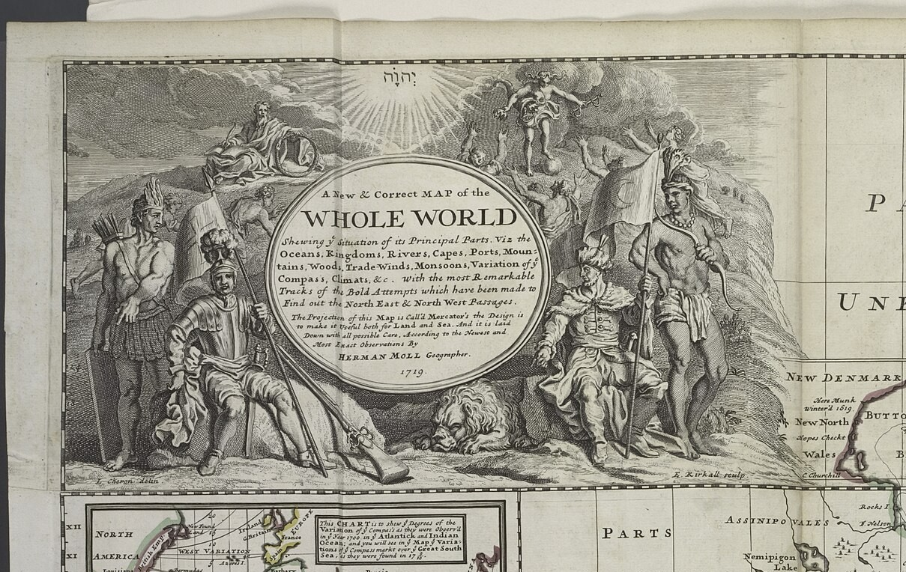
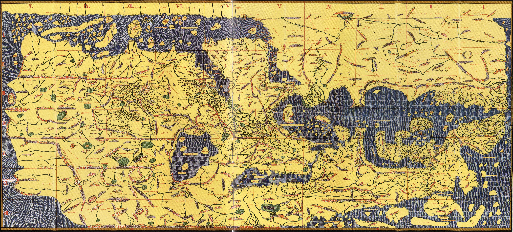

Rig your Analysis Card
One sheet, folded like a book. Cover: your name, "Day 3," the date. Inside, write these four field labels — leave room under each:
Three of these — the mapmaker, whose eyes, and the argument — are your exit ticket today. This is a real historian's tool: you're not just looking at the map, you're cross-examining it.
Something's Wrong
This is Herman Moll's "New & Correct Map of the Whole World," 1719 — as new and correct as maps got. Except…
 Open the FULL map →
Open the FULL map →
Zoom: Ctrl + scroll (or pinch). Bonus: the library mega-scan — huge, can be slow.
Detective hunt — find what's wrong to modern eyes:
- Look at California, very closely. What did Moll do to it?
- Find the words "PARTS UNKNOWN." Now find them again, somewhere else. How many can you spot?
- Bottom-right: find the continent that just… stops, like the artist put the pen down.
- What does Moll call the Pacific Ocean? (Hint: it's huge, bottom-left.)
Sharp-eyes bonus: find the round inset map of the North Pole — a big circle labeled "THE NORTH POLE," bottom-left, below the tip of South America. Why would Moll draw the pole separately instead of on the main map? (Day-2 clue: what does Mercator do to the top and bottom of the world?)
Big idea: these aren't just goofs. They're what people in 1719 believed — and what they wanted to believe. That's the whole point of today.
The Argument in the Picture
A map argues with more than coastlines. Look at the fancy artwork in Moll's title box, the top-left corner. Every figure in it is making a claim about who runs the world.

Open it big →Read the picture — find:
- Who's sitting comfortably, in armor, like they own the place? And who's standing at the edges, half-dressed, holding a bow?
- Up in the clouds, someone shines down over the whole scene. Who does the mapmaker put above everyone?
- Find the lion. Find the person with the bow, and the person with a flag. What is each one supposed to say about its part of the world?
The figures at the edges — the bow, the feathers — stand for the "new" lands. Notice they're drawn as scenery or servants, never in charge. That's an argument, made in a picture.
Flip the Map
Here's a world map made ~560 years before Moll's — by a mapmaker named al-Idrisi, working for a king in Sicily in 1154. Something about it will feel wrong to your eyes. It isn't. It's just drawn from a different point of view.

Open it big →- Which way is up? Al-Idrisi drew his map with SOUTH at the top. There's no law that north goes up — it's a choice, and he made the opposite one.
- Near the top-center he put the places he thought mattered most — Arabia and North Africa, his world. Every mapmaker centers their own.
- So back to Moll: he put Europe big, up near the top, north-up. Whose world is Moll's map centered on?
Fill the Blank
Moll's map is covered in places named "New" — New England, New Britain, New Holland — plus big spaces stamped "Parts Unknown." New to whom? Unknown to whom? People already lived there. Let's put them back on the map.
Open Native-Land.ca →- On Moll's map, find two places starting with "New." Someone renamed them — who was there first?
- On native-land.ca, search our town — Salem, MA. Whose land is this? Let the map tell you.
- Now search a spot Moll stamped "Parts Unknown" (try the middle of North America). It was never empty — just unknown to Europeans.
Even native-land.ca calls itself "a starting point, not the final word" — because it's a map too, and every map is somebody's argument. Including that one.
The Whydah's World
Back to Moll one last time — he drew this two years after our ship went down, and her whole world is on it. Find the three places:
- GUINEA — the West African coast she was built to sail to, to buy enslaved people. (She's named for a port there: Ouidah.)
- The Caribbean — where she delivered them, and where Bellamy's pirates later captured her.
- New England — not a stop on the slave route. It's only where the pirates sailed her afterward, and where she wrecked and still lies (yesterday's live-cam water).
Make Your Case
Finish THE ARGUMENT on your card like a historian — a claim, backed by evidence:
"This map argues that ______
because I can see ______ on it."
- Walk your sentence up to the board when Mr. Howe calls for it — every crew's claim goes up.
- Then stand on the line. One wall = "MOLL made this map." The other wall = "the EMPIRE that paid for it made it." The pirates who fed him the intelligence? Somewhere in between. Go stand where you believe — and be ready to defend your spot.
There's a real case for each: a map has a mapmaker, a source, and a paymaster. So who really made it?
cartographer = a mapmaker · empire = one country ruling lands and people far away · intelligence = secret, valuable information · argument = a claim a map (or anything) is trying to prove